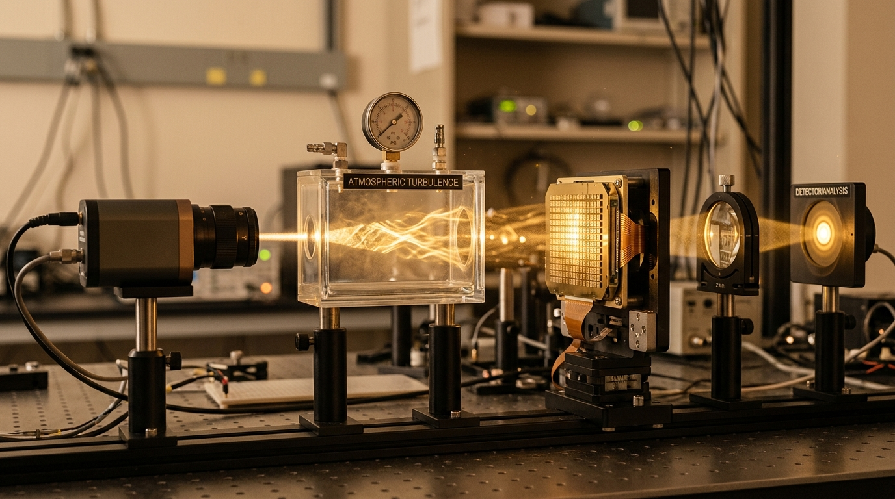

Correct the wave.
Preserve the signal.
Explore AI-assisted wavefront correction under simulated atmospheric turbulence. Trace closed-loop beam propagation across the optical bench and inspect live numerical recovery.

The Live Lab
Execute client-side numerical simulations of atmospheric turbulence and adaptive optics correction. Adjust physical parameters, evaluate machine-learning models, and inspect synchronized beam intensities and phase distributions.
Held-Out Evaluation Split
What this simulation actually shows (Scientific Honesty)
Expand DetailsComputational Methods
An end-to-end mathematical narrative of how coherent optical wavefronts are modeled, sensed, estimated, and reconstructed.
Simulates optical path length fluctuations using the modified von Kármán power spectral density. Computes spatial phase screens via inverse 2D Fast Fourier Transform.
Propagates the complex pupil field $E = A \cdot \exp(i\varphi)$ into far-field intensity. Accurately predicts speckle patterns and Strehl ratio degradation.
Divides pupil into $4 \times 4$ lenslets. Evaluates average spatial gradients ($s_x, s_y$) per subaperture, producing 32 slope features per scenario.
Solves closed-form normal equations with an $L_2$ penalty to map slope features to 15 Zernike aberration modes, preventing collinear overfitting.
Reconstructs the continuous estimated phase screen from predicted orthogonal polynomial coefficients and calculates residual error.
Proposed Markov decision process: agent receives sensor slopes, commands deformable mirror actuator voltages, and optimizes Strehl ratio reward.
Benchmark Results
Official metrics documented in the project thesis compared against live client evaluation on held-out realizations.
Evaluation Record: Linear vs. Ridge Regression
Reference: Team SHYENA Applied Physics Project Report (Pages 28 & 31).
| Model Specification | Regularization (α) | Report RMSE (rad) | Live Client RMSE | Generalization Gap | Status |
|---|---|---|---|---|---|
| Linear Regression (OLS) | α = 0 | 0.3285 rad | ~0.334 rad | +0.048 rad | Baseline |
| Ridge Regression | α = 10.0 | 0.2910 rad | ~0.292 rad | +0.015 rad | 11.4% Error Reduction |
Test RMSE vs Number of Realizations
Regularization Prevents Overfitting
Adjacent Shack-Hartmann subapertures measure spatially correlated wavefront gradients. Ridge regression's $L_2$ penalty dampens collinear weight blowups, achieving ~11.4% lower test RMSE.
Low-Order Modes Dominate
Tip, tilt, and defocus (Zernike modes 2, 3, 4) contain over 70% of turbulent phase energy. Linear models reconstruct these effectively, while higher-order spherical modes require non-linear networks.
Sample Capacity Plateau
Increasing realizations beyond 100 samples yields diminishing returns. Linear models hit a mathematical capacity ceiling, highlighting the future role of physics-informed neural networks.
Research Limitations
Honest reflection on study boundaries as cataloged in Section 9 of the project report (Pages 32–33).
Team SHYENA
FROM THE VEDAS TO VELOCITY

NIST University, Berhampur, Odisha-761008, India